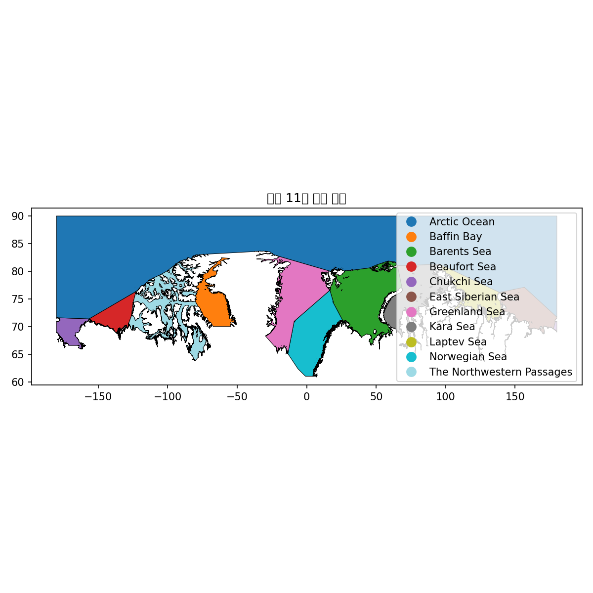
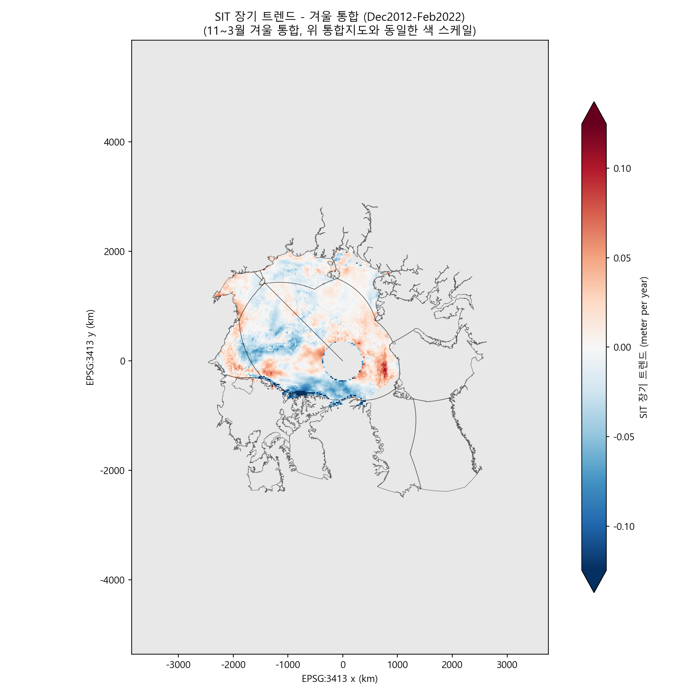
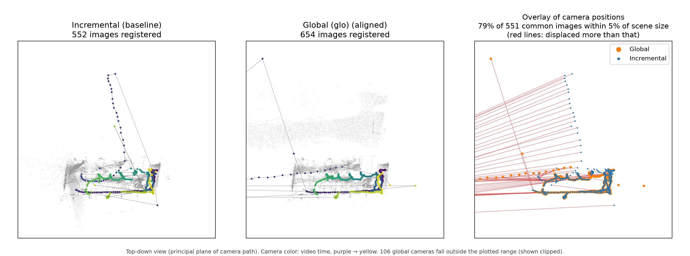
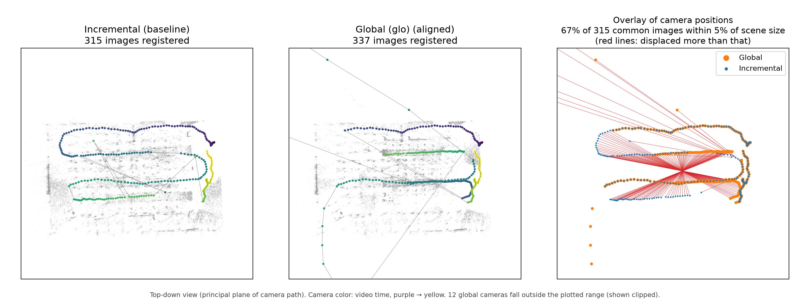
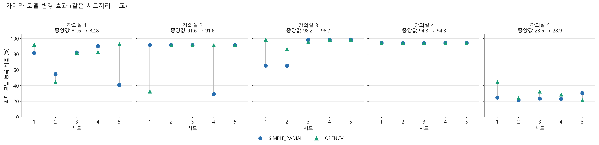

Oct 2026 – Present현재
What Drives Multi-Tier Escalation?
Fidelity and Paraphrase-Stability of Post-hoc Explanations for Cost-Aware LLM Escalation
비용 인식 LLM 에스컬레이션을 위한 사후 설명의 충실도 및 패러프레이즈 안정성 연구
LLMExplainabilityCost-Aware Systems
Ongoing research on whether post-hoc explanations for LLM outputs remain faithful and stable under paraphrasing, in the context of deciding when a cheaper model should escalate a query to a more capable one.
LLM 출력에 대한 사후 설명이 문장을 바꿔 표현해도 충실성과 안정성을 유지하는지, 저비용 모델이 언제 더 강력한 모델로 질의를 에스컬레이션해야 하는지의 맥락에서 진행 중인 연구입니다.
Jul 2026 – Nov 2026
A GT 3D Bounding-Box-Based Framework for Vehicle Frontal Blind Spots
3D GeometryComputer VisionTUMTrafFirst Author
Built the full measurement pipeline behind the Sensors paper — from TUMTraf label preprocessing and geometric modeling to camera-projection checks, sensitivity analysis, and qualitative validation.
Sensors 논문을 뒷받침하는 전체 측정 파이프라인을 직접 구축했습니다 — TUMTraf 라벨 전처리와 기하 모델링부터 카메라 투영 검증, 민감도 분석, 정성적 검증까지.
Jul 2026 – Present현재
Regional Vulnerability Analysis of Arctic Sea-Ice Decline
Dongduk Women's University — KOPRI Competition동덕여자대학교 — 극지연구소 공모전
Anomaly DetectionIsolationForestLLM PipelineGeospatial Data


Integrated already-processed Arctic indicators (SST–SIC correlation, SIT trend, EOF/PC modes) across 11 IHO sea regions, applied IsolationForest to flag anomalous region-period combinations, and built an LLM pipeline (Groq API) that synthesizes region-level vulnerability interpretations from the trend and EOF results.
이미 가공된 북극 지표(SST–SIC 상관, SIT trend, EOF/PC)를 11개 IHO 해역 단위로 통합하고, IsolationForest로 평소 패턴에서 벗어난 해역×기간 조합을 탐지했습니다. 이 결과와 EOF 유형화 결과를 LLM 파이프라인(Groq API)에 입력해 해역별 취약성 해석을 종합했습니다.
2026
Analysis of Visual Characteristics That Cause 3D Reconstruction Failures in Classrooms
Capstone Project — with Bo-min Son, Tae-wan Kim캡스톤 프로젝트 — 손보민, 김태완과 공동
3D ReconstructionComputer VisionCapstone



Compared 3D reconstructions across five classroom scenes under different camera models and reconstruction seeds, using visual diagnostics to trace where reconstructions broke down.
카메라 모델과 재구성 시드를 바꿔가며 5개 교실 장면의 3D 재구성을 비교하고, 시각적 진단 자료로 재구성이 어디서 무너지는지 추적했습니다.
May 2024 – Jun 2024
GPR-Based Buried-Object Detection Using CNN and ResNet
Personal Project개인 프로젝트
CNNResNetSignal ProcessingKeras
Converted CMU-GPR ground-penetrating radar traces into normalized grayscale B-scan images and hand-labeled 200 samples (normal vs. buried-object). Implemented an Xception-style residual CNN and a ResNet from scratch in Keras for binary classification; both models classified held-out samples correctly, with ResNet giving sharper anomaly discrimination.
CMU-GPR(지표투과레이더) 신호를 정규화된 그레이스케일 B-scan 이미지로 변환하고 200개 샘플을 정상/매설물 있음으로 직접 라벨링했습니다. Keras로 Xception 스타일의 residual CNN과 ResNet을 직접 구현해 이진 분류를 수행했으며, 두 모델 모두 held-out 샘플을 올바르게 분류했고 ResNet이 더 뚜렷한 이상 신호 구분력을 보였습니다.
Jul 2023 – Aug 2023
Patent Landscape and Freedom-to-Operate Analysis of Food-Waste Treatment Technologies
Campus Patent Universiade 2023 — Team B9캠퍼스 특허 유니버시아드 2023 — B9팀
Patent AnalysisIP ResearchTeam Project
Built a five-category patent landscape across the KR/JP/US/EP offices using bilingual proximity-operator queries with iterative noise-term pruning, defined an S/A/B relevance-grading rubric, and produced claim-level freedom-to-operate analysis (KR jurisdiction) alongside quantitative analysis (assignee rankings, filing-year trends, technology-flow maps) in an 87-page final report.
한·일·미·유럽(KR/JP/US/EP) 특허청을 대상으로 5개 카테고리의 특허 지형을 조사했고, 이중언어 근접연산자 검색과 반복적 노이즈어 정제, S/A/B 관련도 평가 기준을 적용했습니다. 청구항 단위의 자유실시(FTO) 분석(KR 관할)과 출원인 순위·연도별 출원 추세·기술 흐름도를 포함한 정량 분석을 수행해 87페이지 분량의 최종 보고서를 작성했습니다.